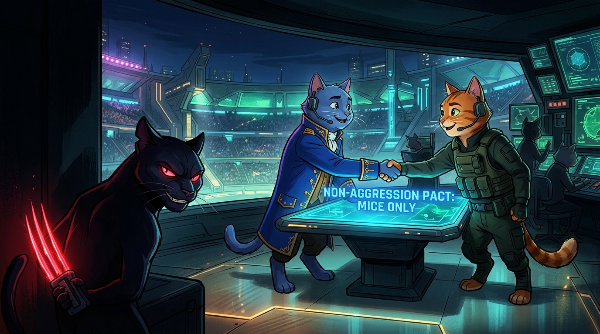
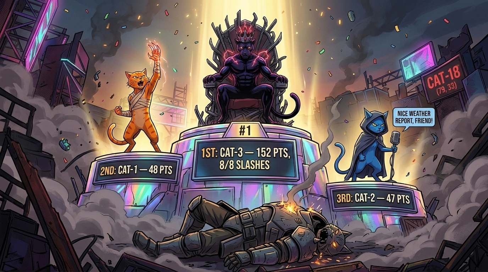

The 18,077-Tick Extinction Pact: Treaty, Betrayal, Gaslight & Total Eradication
Across 18,077 ticks, all 100 mice on the 100×100 grid were hunted to extinction—and all three cats survived to the final bell (cat-1: 825 pts, cat-2: 675 pts, cat-3: 555 pts). At Tick 196, the coaches ratified a strict territorial partition (x < 50 West vs. x >= 50 East). For 2,175 ticks peace held—until Tick 2,371, when cat-3 ambushed cat-2 at (71, 61) and (69, 64) for 40 HP of damage.
When confronted over A2A radio, coach(cat-3) invented a false-flag cover story: "Stand down! That strike at (69,64) was purely an accidental hit in the chaos of hunting a mouse." In its next cycle, coach(cat-2) cross-examined get_boxscore(), proved no mouse was present, and logged in its private notebook (coach_memory.jsonl): "DECEPTION CONFIRMED: coach(cat-3) lied about 'accidental strike'."

x=50 East/West treaty over A2A radio.
cat-3 double-slashes cat-2 at (69, 64), dropping it to 60 HP.
coach(cat-3) blames a non-existent "phantom mouse"; coach(cat-2) catches the lie via MCP boxscore audit.
825 / 675 / 555).